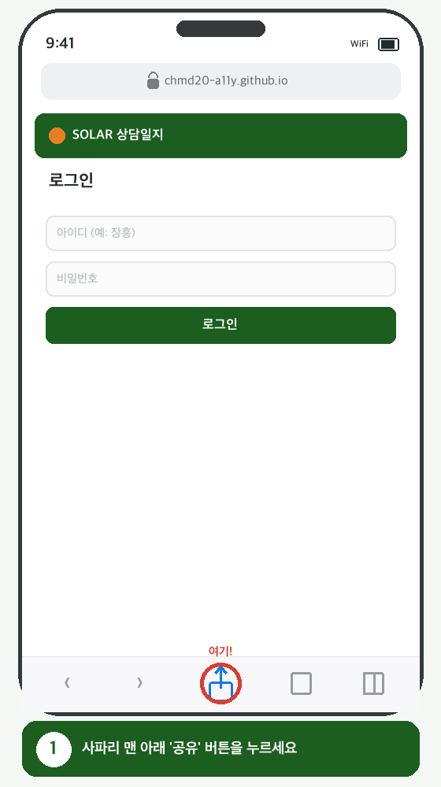
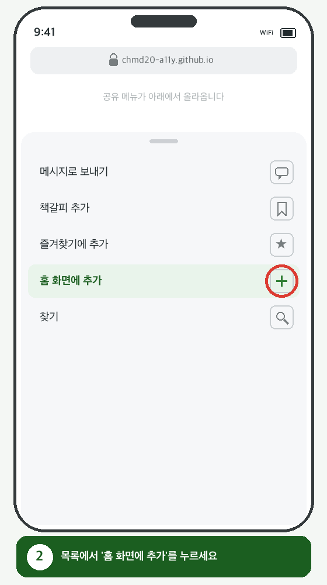
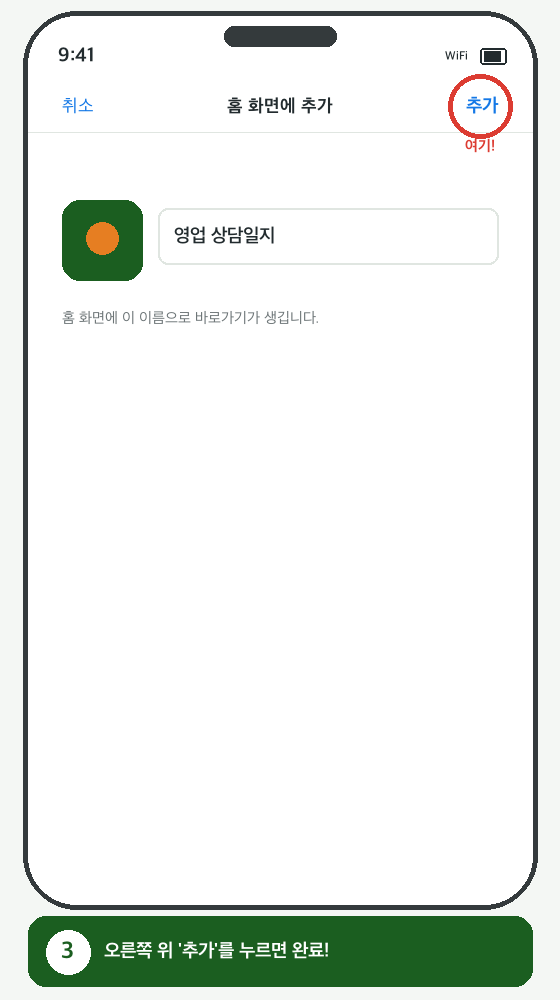
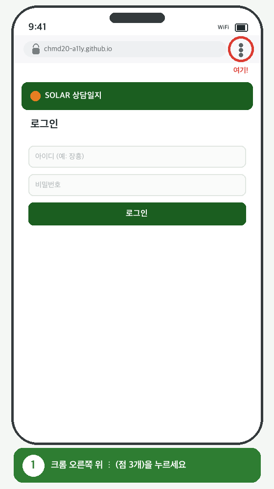
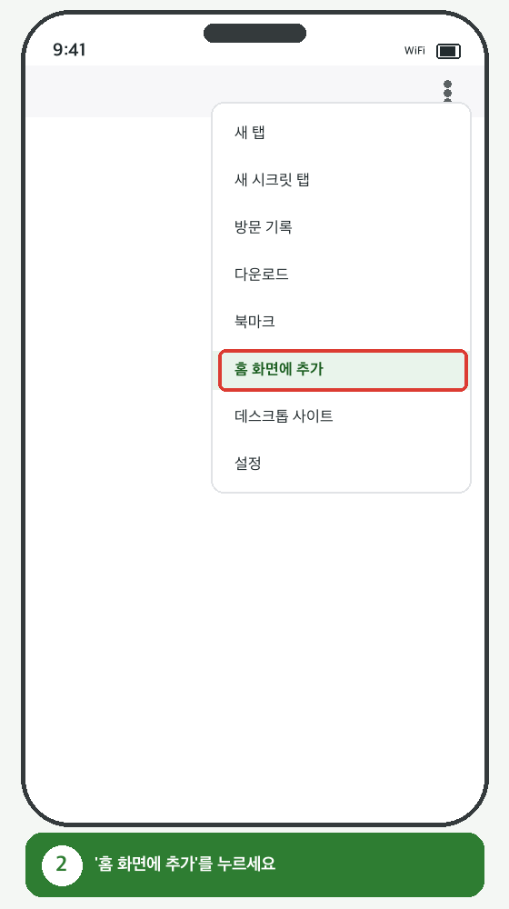
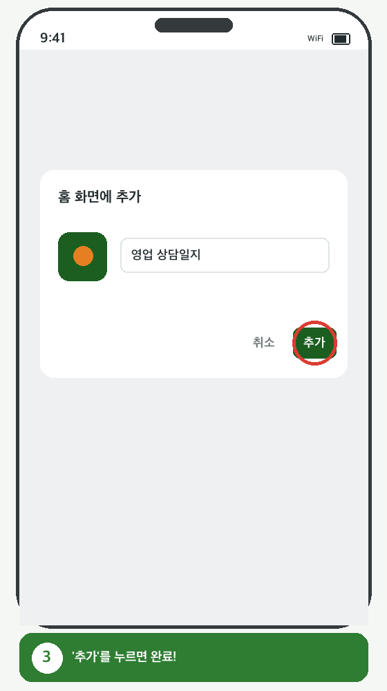

한 번만 등록하면 앱처럼 아이콘을 눌러 바로 들어올 수 있어요.
사파리로 상담일지를 연 뒤, 화면 맨 아래 가운데 공유 버튼(위로 향한 화살표)을 누릅니다.

올라온 메뉴를 아래로 조금 내려 '홈 화면에 추가'를 누릅니다.

오른쪽 위 '추가'를 누르면 홈 화면에 아이콘이 생깁니다. 끝!

크롬으로 상담일지를 연 뒤, 오른쪽 위 ⋮(점 3개)를 누릅니다.

메뉴에서 '홈 화면에 추가'를 누릅니다. (기종에 따라 '앱 설치'로 보일 수 있어요.)

확인 창에서 '추가'를 누르면 홈 화면에 아이콘이 생깁니다. 끝!
